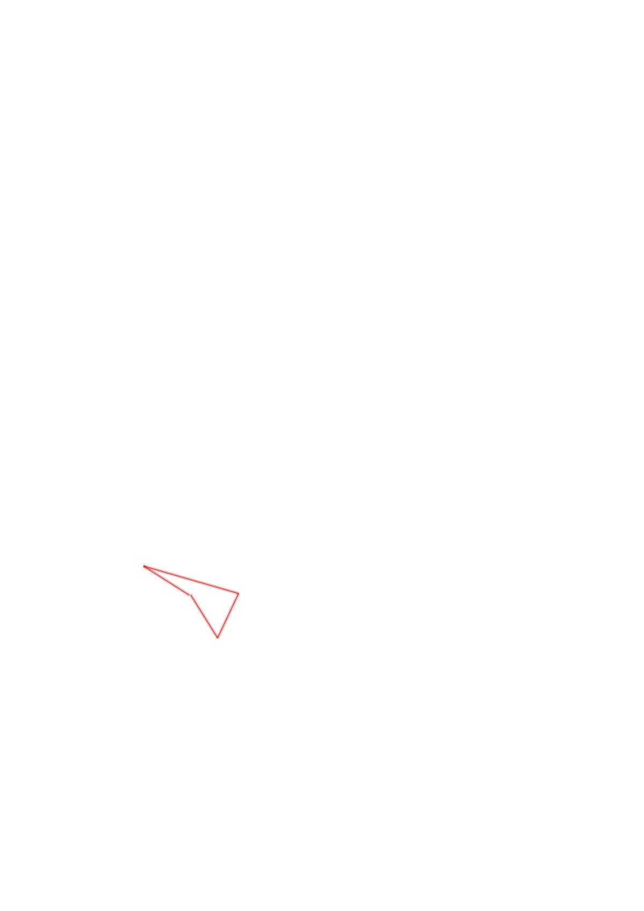
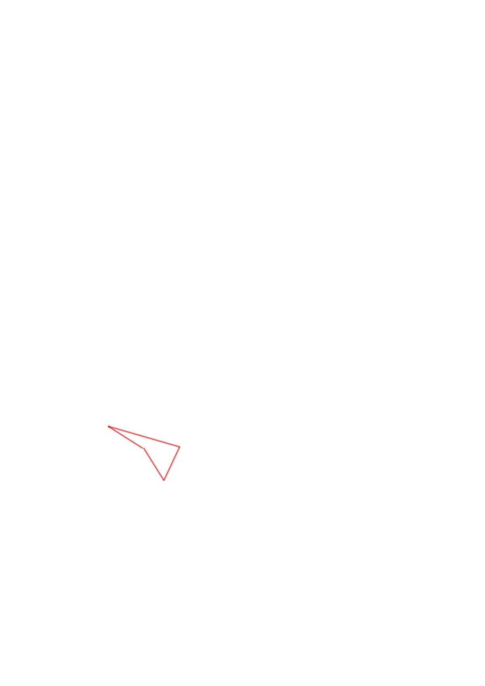
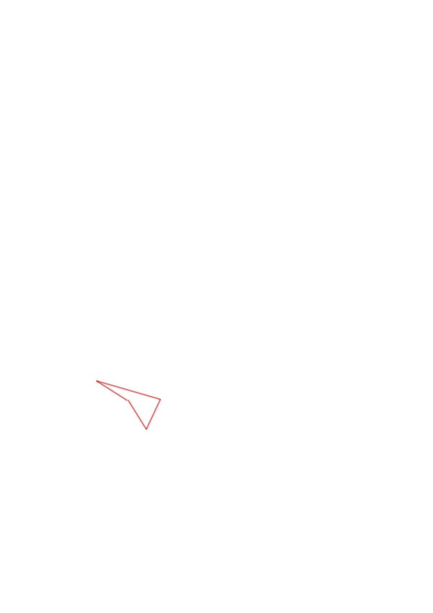

| Control | Points | Time Punched | Distance | Your Time | Pace | Place | Fastest Time | Median Time | % Behind Fastest |
|---|---|---|---|---|---|---|---|---|---|
| 35 | 30 | 0.27 | 0:01:45 | 06:28 | 11 / 17 | 0:01:07 | 0:01:37 | 56% | |
| 63 | 60 | 0.48 | 0:48:46 | 1:41:35 | 1 / 1 | 0:48:46 | 0:48:46 | 0% | |
| 37 | 30 | 0.24 | 0:06:05 | 25:20 | 4 / 4 | 0:02:22 | 0:03:29 | 157% | |
| Finish | 0 | 0.25 | 0:02:58 | 11:52 | 2 / 3 | 0:01:04 | 0:02:58 | 178% |
